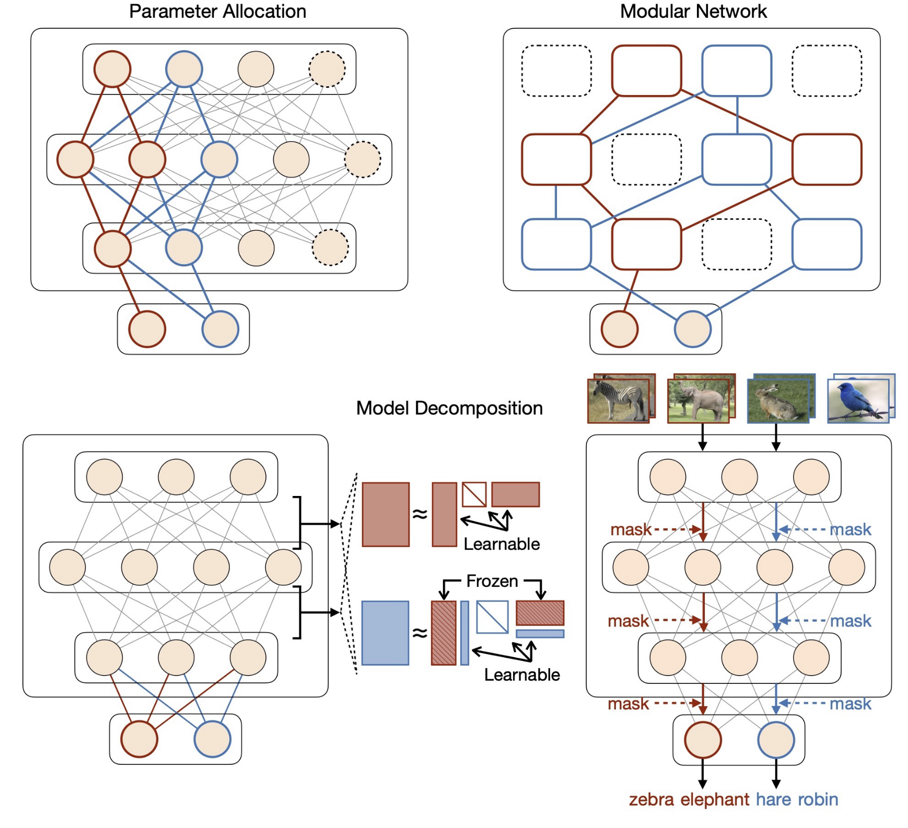

I am currently researching on continual learning, a paradigm of machine learning. I am very keen to introduce its basic knowledge here to you whoever insterested in the area or just in what I’m doing personally. I’ll make this post into an index page for resources when more continual learning comes up.
In this post I’ll explain the basics of continual learning including concepts, problem definition, datasets, metrics, etc, and go through some selected classic algorithms in each of their method categories.
1 Continual Learning and Its Related Concepts
Continual learning is also known as lifelong learning, incremental learning and sequential learning. Just a bit of history, this area started in 1990s when it was usually refered to as lifelong learning, but now continual learning is more common after deep learning was brought to this area and made it thrive again.
1.1 The Scope
First things first, it’s very important to understand the scope of this concept: continual learning is one of the machine learning paradigms.
So what are those machine learning paradigms? We always come across a bunch of different terms when looking up for machine learning, such as supervised / unsupervised learning, reinforcement learning, transfer learning, or perhaps image classification, object detection, machine translation if you are more insterested in real applications. There are lots of mixed usages among the words like scenarios, tasks, settings, problems, but here we do need a clear definition in these terms. We call the real applications as scenarios, and the more abstract ones as paradigms. Formally, paradigms are more of categories about how the data distribute and the way that they are allowed to be used, and how the model is evaluated, without looking into what types of data are.
As we mentioned, supervised / unsupervised learning is probably the most frequently involved paradigms. They are about general components of the data – if labels are used for training, and usually an one-off training and testing process, which we often refer to as a task. Over the past decade, many problems that involve multiple tasks got into sights of machine learning research and turned into paradigms which led to increasing popularity in deep learning research keywords. They include but are not limited to transfer learning, multi-task learning, online learning, meta learning, and of course, continual learning.
1.2 Definition
In the concept level I define continual learning as this:
Continual learning is a multi-task machine learning paradigm where an algorithm receives the data from tasks sequentially without the access to previous ones to learn a model that performs the best for all tasks.
Please be aware that “sequentially” and “for all tasks” are both essential to this concept. It could turn to other paradigms without either of them. See “Difference From Other Paradigms” for details.
The non-accessibility to previous task is also the key to differentiate CL. It is a very practical assumption, considering the huge memory cost or potential violence to privacy to store all previous data in real-world scenarios.
If previous data are allowed to be accessed, the model can be retrained with all data from new task and previous tasks, which is sometimes called joint training. However, it is not even better. Other than the computational cost, the data from various distributions make learning difficult as well. The model might learn something too general to encourage benefits for all, or even something wrong (sometimes called induction bias). Multi-task learning paradigm tries to address this problem in some ways, but again, it doesn’t worth to take a detour with training a multi-task model for mutiple times.
We must also notice that continual learning deals with infinite sequence of tasks so the algorithm has no idea about its future challenges. That is what “continual” is meant for.
It’s also important to note that continual learning typically deals with tasks that vary significantly from each other. If the tasks were from the same distribution or highly similar, it wouldn’t be a challenge for the algorithm to perform well naturally across all of them. In other words, the data stream is usually non-stationary (supposing we blur the boundaries between tasks).
There are smaller categories in continual learning such as TIL and CIL, but it cannot be explained abstractly. We’ll come to that later after introducing classification.
1.3 Differences From Other Paradigms
The differences from other paradigms, again, consider the data used (training) and evaluated (testing). We have an inspirational illustration from the paper:

- Standard supervised learning: continual learning with one task reduces itself to this normal machine learning paradigm.
- Multi-task learning: If continual learning is without “sequentially”, the algorithm has access to data of each task all at once when training the last task. It turns to multi-task learning.
- Transfer learning: If continual learning is without “for all tasks”: like if the performance for the last task alone becomes what the algorithm aims for, it turns like transfer learning. If for other task but the last, it turns like a less common paradigm called reverse transfer learning. Note that transfer learning is usually a two-task (A & B) paradigm. Domain adaptation is something similar to transfer learning.
- Online learning: it is actually a single-task paradigm where the test and apply are as frequent as the training data. It does look like continual learning though but they are completely different because the online learning data are from the same distribution.
- Meta learning: If “for all tasks” in continual learning definition turns to “for unseen new tasks”, it turns to meta learning. In this case the algorithm cannot get any supervising info of the unseen tasks so it has to learn to learn. This idea is conducted by a meta learner which considers tasks as samples for learning to learn, in a meta level.
1.4 Why Continual?
There are many features in human learning. One of the most important is to learn and adapt new knowledge continuously without forgetting previous knowledge. Unfortunately, it can hardly be achieved through standard deep learning process, therefore a wide range of paradigms aformentioned are explored from different aspects to equip AI not only with a huge performance on a single task. Continual learning is the paradigm primarily oriented towards addressing the problem of forgetting in neural networks. (The problem is generally refered to as catastrophic forgetting. We’ll come to that later. )
Continual learning is still in its early age without so many examples of applications due to its difficulty, but it is a highly potential solution to any real-world applications facing a continuous stream of non-stationary data when it’s a bad idea to retrain from scratch. Here are some examples:
- In Robotics
- Robotic agents are naturally playground for continual learning because of they interact with real world, and some might say CL is born for robotics. There are various scenarios like object detection, segmentation, reinforcement learning which face the non-stationary data challenges1.
- In Autonomous Driving
- In Finance
- It can also fit in other scenarios like CV, NLP, recommendation systems, health care, etc.
2 Continual Learning Classification and Formal Definitions
In the field of continual learning, most researchers limit their scenarios to classification tasks, especially image classification. It is not only because classification is the most basic scenario of machine learning, but also because of the difficulty of continual learning itself. We don’t really want to make things worse before it can work better on classification. Here we give a formal definition of classification in continual learning.
In continual learning classification problem, we have:
- Tasks: \(t=1,2,\cdots\)
- Training data of tasks: \(\mathcal{D}_{\text{train}}^{(t)}=\{(\mathbf{x}_i,y_i)\}_{i=1}^{N_t} \in (\mathcal{X}^{(t)},\mathcal{Y}^{(t)})\)
- Testing data of tasks as well: \(\mathcal{D}_{\text{test}}^{(t)} \in (\mathcal{X}^{(t)},\mathcal{Y}^{(t)})\)
We aim to develop an algorithm which trains the model \(f^{(t-1)}\) to \(f^{(t)}\) at the time for task \(t\):
- With access to \(\mathcal{D}_{\text{train}}^{(t)}\) only
- To perform well on all seen tasks \(\mathcal{D}_{\text{test}}^{(1)}, \cdots, \mathcal{D}_{\text{test}}^{(t)}\)
Again, the distributions \((\mathcal{X}^{(t)},\mathcal{Y}^{(t)}), t=1,2,\cdots\) are usually very different from each other. They can be totally different tasks from classifying handwritten numbers to classifying animals, or from binary classification to multi-class.
You might wonder in this moment, how can a model \(f\) with the same architecture deal with different tasks, at least a model for binary classification certainly cannot deal with classifying more than 2 classes in a new task. Well, that is something we are not able to avoid for a hundred percent but the \(f\) should take the part of model as much as the tasks can share with each other.
Therefore, a neural network architecture for continual learning is always a multi-head classifier where the output heads are assigned to the tasks. A head is simply a linear output layer for a shared \(f\) to the maximum extent. New heads will be initialised and trained along with \(f\) as new tasks come in.
In terms of the way to test different tasks, continual learning classification can be divided into subcategories of TIL and CIL. They have different logics in their output heads. We assume that task \(t\) contains \(C_t\) classes.

2.1 Task-Incremental Learning (TIL)
Task-Incremental Learning (TIL) gives model the information of which task the instance is from during testing, i.e. the test instance is \((\mathbf{x}, y, t)\) where we know \((\mathbf{x}, y) \in (\mathcal{X}^{(t)},\mathcal{Y}^{(t)})\). This is similar to how A-level exams are conducted separately for each subject, with students knowing perfectly well which subject they are being tested on.
In that case, the output heads for different tasks can be totally segregated. As shown in ?@fig-TILvsCIL, a TIL head are made up for its new task alone because it doesn’t have to consider about other tasks.
If the task ID information of test instances is not given, it becomes a more difficult paradigm, which I call as task-agnostic testing (though it is not much commonly used). In this case, the model has to figure out the test ID by itself.
There are even more advanced paradigms which eliminate the task boundary. For example, task-agnostic continual learning assumes task IDs are not even given during training. We won’t cover these paradigms.
2.2 Class-Incremental Learning (CIL)
Class-Incremental Learning (CIL) mixes classes from all tasks together and let the model choose from a class that could be from any seen task, i.e. the test instance is \((\mathbf{x}, y) \in (\mathcal{X}^{(1)}\cup \cdots\cup \mathcal{X}^{(t)},\mathcal{Y}^{(1)}\cup \cdots\cup \mathcal{Y}^{(t)})\). You can imagine a huge session of A-level exam that include and mix all the subjects in one single paper. It drops the assumption that the model knows task ID, and make itself much more difficult than TIL, especially when the task squence goes long.
The output heads therefore evolve incrementally as shown in ?@fig-TILvsCIL. The model would use the last huge output head which inherit all the previous heads to test, instead of finding the independent head of a known task ID.
3 The Challenges: From Examples of the Baseline Algorithms
Continual learning is currently a very difficult learning paradigm due to the challenges of catastrophic forgetting and problems in trading off model’s stability and plasticity. In this chapter, I will show the effects of 2 baseline algorithms which push the model to either stable or plausible extreme, and hopefully these challenges can be explained intuitively better after the illustrations. But first of all, we shall look at where and how to measure the forgetting and other aspects continual learning cares about.
3.1 Dataset: Permute, Split, Combine
The datasets where continual learning algorithms are measured are sequences of normal machine learning datasets. They are usually constructed in three ways:
- Combine: from different sources of ML datasets, each serving as a task. For example, HAT evaluated on a sequence from 8 datasets: CIFAR10 and CIFAR100 (Krizhevsky, 2009), FaceScrub (Ng & Winkler, 2014), FashionMNIST (Xiao et al., 2017), NotMNIST (Bulatov, 2011), MNIST (LeCun et al., 1998), SVHN (Netzer et al., 2011), and TrafficSigns. Note that the datasets might have different input dimensions, so either align the inputs or properly design task-specific model inputs
- Permute: there are ways to construct from one datasets. We can permute the image in a certain way from a dataset to get a different task.
- Split: a dataset usually have multiple classes and we can group different classes together to form a small dataset. This is the other way.

They can be all used to construct any of TIL, TIL with task-agnostic testing, CIL. Note that permutations must be the same way to construct one dataset, that’s why we set permutation seeds. Or it ends up with a dataset totally random and can’t be learned anything from.
3.2 Metrics: What CL Cares About
Although the task sequence might be infinite, we have to stop at some point to take a look at how well the model performs. The number of tasks are often set when doing the evaluation on continual learning as we need the comparison under the same standard.
There are tests after training each task \(t\) on all seen tasks \(1, \cdots, t\). After each test on task \(\tau\) using \(\mathcal{D}_{\text{test}}^{(\tau)}\), the model can get the accuracy of how many instances are correctly classified. We denote it as \(a_{\tau, t}\) and it forms an upper triangular matrix of metrics. It plays an important role in evaluating continual learning and all the metrics are calculated from it (and some other auxillaries).
\[ \begin{array}{cccc} a_{1,1} & & & \cdots \\ a_{2,1} & a_{2,2} & & \cdots \\ a_{3,1} & a_{3,2} & a_{3,3} & \cdots \\ \vdots & \vdots & \vdots & \ddots \\ \end{array} \]
As we said in the definition, the top-one objective of continual learning is to make the model perform well on all tasks. The average accuracy (AA) well represents it as the main performance metric of continual learning. All effort are centered around improving it.
\[\mathrm{AA}_t=\frac{1}{t} \sum_{\tau=1}^t a_{t,\tau}\]
Forgetting is a major problem for CL algorithms to address. It manifests as the drop in performance on previously learned tasks. If we sum up all the performance between current accuracy and the accuracy that they drops across previous tasks, we get a metric called backward transfer (BWT). It also reflects the stability of the model because small drop in performance on previous tasks mean keep stable from being significantly changed by training new tasks.
\[ \mathrm{BWT}_t=\frac{1}{t-1} \sum_{\tau=1}^{t-1}\left(a_{t,\tau}-a_{\tau, \tau}\right) \]
Continual learning algorithms influence the training of each task by encouraging interaction with previously learned tasks. They could have achieved better performance without considering preventing forgetting on previous tasks. The model trained by the task alone is called reference model. If we sum up the difference between continual learning model and this reference model, we get forward transfer (FWT). It reflects the plasticity of the continual learning model, as it measures how closely the model’s performance approaches that of the reference model, which is theoretically most plausible.
\[ \mathrm{FWT}_t=\frac{1}{t-1} \sum_{\tau=2}^t\left(a_{\tau, \tau}-a^I_\tau\right) \]
AA, BWT, FWT are the most common overall metrics in continual learning. Please check out another post “Understanding Metrics in Continual Learning” which discusses full details of all metrics used in continual learning.
3.3 Finetuning and Fix: the Baselines
The most naive way to finish a continual learning process is to take no action and let the model learn from the sequential data from tasks. At the beginning of each task, it simply initialise the training from the model learned at the end of the last task. That is what we called the Finetuning baseline or sometimes SGD. It is technically not a continual learning algorithm but early CL work usually took it as a baseline. Note that new output heads are sequentially introduced and Finetuning simply initialise them in the way it was supposed to be.
On the experiment of Permuted MNIST 10 tasks, ?@fig-Finetuning-results it shows that the last task performance drastically drops every new task arrives, and keep dropping with more new tasks arrive. This leads to a significant drop on the average performance AA.

We can tell the direct cause of the poor performance is the unconstraint training on top of previous task, causing a lot of forgetting. If we turn the other way round, we get the Fix approach. This approach simply fixes the model after the training the first task, stops learning aiming to fully address the forgetting. But this lead to the other extreme. On the same experiment, ?@fig-Finetuning-results shows the performance of new task are way worse than the first, also leads to drop on AA as more tasks come to be calculated into average.
It is even worse that accuracy goes down to zero in CIL setting for lack of negative examples. That is because the model is convinced to predict only the classes in the new task if only those classes are trained without negative examples for previous tasks. As we know negative examples are very important to machine learning and always suffer from unbalanced data. This shows again that CIL is harder than TIL.
3.4 Challenge 1: Catastrophic Forgetting
Due to the inherent characteristics of DNN, previous information can hardly be preserved through initialisation after model’s convergence to new tasks. Finetuning suffers a lot from catastrophic forgetting which causes the drastic drop in average performance. Catastrophic Forgetting is the problem in continual learning that learning new tasks can interfere with and degrade performance on previously learned ones. It happens so easily as Finetuning is the most natural way for continual learning and algorithms usually start from here.
3.5 Challenge 2: Stability-Plasticity Dilemma
Catastrophic forgetting reflects a low stability feature of the continual learning model. In this research area, most people take it as the main problem and try to promote as much stability as they can. Hundreds of papers talk about continual learning together with catastrophic forgetting.
However, this is not everything. Fix, promotes too much stability then completely lost plasticity. We find two extremes, .ctastrophic forgetting is only one end. As we see in the baseline results, And tilting the balance to the other end is equally problematic. Both two extremes lead to the drastic drop in performance. which tells stability and plasticity contribute vitally in the average performance.
However, A model can’t achieve both stab. Higher stability / plasticity often leads to lower plasticity / stability. it’s like a balance. That‘s Stability-Plasticity Dilemma in deep learning, and it’s particular in continual learning.
Therefore, a good continual learning algorithm must seek to find some point in between the two extremes, which could balance or trade off between stability and plasticity of the model. That is the way to achieve the best average performance. Continual learning is about the balance of stability and plasticity, not only addressing forgetting.

We could also think in this way about why performance. We still look at baselines. they both pour all the effort to achieve the better performance of only one task. Finetuning favourites the last task while Fix keep the first task. But considering the long task sequence in continual learning, it is very unvise to give up all other tasks as the objective takes every task into account. @fig- illustrates in a parameter space, and we would rather think a balanced CL algorithm as the best choice.
3.6 Challenge 3: Network Capacity
Learning AI models is a process of resource distribution. In neural networks, the knowledge from data is distributed to AI models and consolidated into their representation space. In standard machine learning practice, the network size is typically selected according to the data size to avoid underfitting or overfitting issues. If we think like that way in continual learning, we find that the knowledge keeps arriving task after task and never comes to an end. At the assumption of infinite task sequence, we cannot select a proper-sized network beforehand because we never know the data size, and any fixed model will eventually get full and lead to the performance drop. That’s the problem of network capacity.
Some continual learning algorithms adhere to the assumption under a fixed network, but some do not. They typically expand the network and introduce new parameters, in a linear or dynamic, adaptive way when new task comes up or it reaches the capacity limit.
It is not fair to compare algorithms assuming a fixed network with those allowing expanding. Imagine that in TIL, a naive strategy that each new task initialise a model completely independent from previous tasks (it can be called independent learning). It can easily achieve the best performance the same as the reference model mentioned above, which is commonly used as the theoretical upper bound of accuracy in many papers. That’s why some work urges new performance metrics taking the model memory into account to offer a fair evaluation standard.
4 Methodology
Since 2017, various continual learning algorithms have been proposed. The overall idea of tackling continual learning paradigm is to get the most of previous information and knowledge and then consolidate in .
We have many different categories of approaches that operates on differenet aspects of a machine learning system. Be aware of the what and how information from previous task and how they used.
4.1 Replay-based Approaches
The most direct way is the get the previous data, and re-train. However, it is the key assumption of CL that no access to previous data. But this assumption is mainly due to a big data memory issue, but we are still allowed with leveraging a small amount of previous data. That is the idea of replay-based approaches. replay-based approaches Prevent forgetting by storing parts of the data from previous tasks▶Replay algorithms use them to consolidate previous knowledge. It is all designed for mimicing the previous task distribution without accessing the whole data.
The small amount is not enough to re-train. It has to be representative and operate in a different way other than mix them into training batch with new data. One of the earlist work is iCaRL. It selects the representative samples by some manual algorithms and use them as the reference of knowledge distillation for traininng new tasks. In this work, the memory is fixed and average for every previous tasks, so Some represenattives has to drop when a previous task newly arerives.
Some approaches generates the previous data from a generator though.
4.2 Regularisation-based Approaches
Regularisation-based approaches add regularisation to loss function. The regularisation is meant for preventing forgetting. The regularisation term is a term in loss function that is also a function of parameters which add up to the normal classification loss of new task \(\mathcal{L}^{(t)}_{\text{cls}}(\theta) = \sum_{(\mathbf{x}, y)\in \mathcal{D}^{(t)}_{\text{train}}} l(f(\mathbf{x}; \theta), y)\).
\[ \min_\theta \mathcal{L}^{(t)}(\theta) = \mathcal{L}^{(t)}_{\text{cls}}(\theta) + \lambda R(\theta) \]
\(\lambda\) is the regularisation parameter which works as a hyperparameter controlling the intensity of preventing forgetting, or the scale to balance stability- plasticity trade-off.
Some will directly regularise on the values of parameters, we call weight regularisation. The most naive way is a regularisation term forcing the parameters for the new tasks to be close to the previous task params:
\[ R(\theta) = \sum_{i} \left(\theta_i - \theta_i^{(t-1)}\right)^2 = \|\theta - \theta^{(t-1)}\|^2 \]
It is too coarse that they treat all params equally.
Some work try to differentiate parameters, and make it regularization different by some importance values:
\[ R(\theta) = \sum_{i} \omega_i \left(\theta_i - \theta_i^{(t-1)}\right)^2 \]
For example, EWC use the fisher information as importance values, they are calculated after training task t-1 and before training t in the following formula.
\[\omega_i = F_i =\frac{1}{N_t} \sum_{(\mathbf{x}, y)\in \mathcal{D}^{(t-1)}_{\text{train}}} \left[\frac{\partial l(f^{(t-1)}\left(\mathbf{x}, \theta), y\right)}{\partial \theta_i}\right]^2\]
This formula is a result after a series of statistics formula derivation which i don’t wanna go through here, I would rather explain what it means here. For \(\theta_i\), it is the gradient of the loss function to this parameter within the model of after training t-1, showing the sensitivity of that param to performance. If sensitive, that means it is important. It is averaged over the training data which is assumed as the representation of the data distribution of the task t-1.
EWC is probably the most widely used and successful approach in continual learning.
Some other works regularise the parameters not in a direct way but rather aim at other components that is a function of parameters. For examples, features, we call feature regularisation. The most naive way is to force the features extracted by the new model to be close to those extract by the previous model, that’s the idea of LwF:
\[R_{\text{LWF}}(\theta) = \sum_{(\mathbf{x}, y)\in \mathcal{D}^{(t)}_{\text{train}}} l(f(\mathbf{x};\theta),f(\mathbf{x};\theta^{(t-1)})) \]
This is not very effective and straightforward, but it is simple and works better so rather popular in early continual learning studis.
4.3 Architecture-based Approaches
While the replay and regularisation-based approaches try to escape catastrophic forgetting on top of Finetuning by their forgetting preventing mechanisms, architecture-based approaches adopt distinctly different logic of strategy. These approaches leverages the separability characteristic of the neural network architecture. In other words, they treat the network as decomposable resources for tasks, rather than as a whole. The main idea is to dedicate different parts of a neural network to different tasks to minimize the inter-task interference.
The “part” of a network can be regarded in various ways, which leads to different kinds of architecture-based approaches.
Modular Networks: play around network modules like layers, blocks
Parameter Allocation: allocate group of parameters or neurons to task as asubnet Parameter Allocation: OverviewParameter Allocation▶Refines the level of modules to parameters or neurons▶Selects a collection of parameters or neurons to allocate to each task▶Also forms a subnet for the task11/24 Parameter Allocation: Overview▶Weight masks are way greaterthan feature masks in scale▶Should keep a decent amountof neurons in each layerParameter Allocationmethods differ in ways:▶Methods to allocate▶Manually set through hyperparameters▶Learned together with the learning process▶Application of masks during training▶Forward pass▶Backward pass▶Parameter update step▶Application of masks during testing▶Most methods fix the selected subnet aftertrained on their belonged task and use it asthe only model to predict for that task duringtesting
Model Decomposition: decompose network from various aspects into sharedand task-specific components7/24. The compoenet could be any part of the machine leanring systems like modules itself, or a mathematical decomopositrion of each parameters, in terms of what idea you can come up with .

The challenges
Network Capacity Problem Any fixed model will eventually get full and lead to the performance drop, giventhe potentially infinite task sequence▶Become explicit in architecture-based approaches▶Can be solved by taking shortcuts to expand the networks, but it is not fairStability-Plasticity Trade-Off▶Continual learning seeks to trade off the balance between stability and plasticity▶Approaches that fix part of model for previous tasks are lack of plasticity bystressing too much stability▶Others whichever has task shared components still face the classic catastrophicforgetting problem, which is a result of lack of stability▶They both lead to a bad average performance23/24
Note that architecture-based approaches does not naturally fit in CIL where the tasks are mixed together during test.
check out
4.4 Optimization-based Approaches
The Explicitly design and manipulate the optimization step. This often involves direct modification of the gradients from \(g\) calculated with ordinary loss to \(g'\) then use \(g'\) for the gradient descent step.
One reasonable way project the gradient \(g\) to the direction \(g'\) not to interfere previous tasks. Many works define this non interference of gradient directions as orthogonal to the directions that could affect previous tasks if updating in that direction.
If you know linear algebra before, the orthogonal of given vectors is very easy calculated by the Gram- Schmidt formula.
You might wonder do we have enough space to accommodate many gradients orthogonally. Because We know that a neural network is part of a high dimensional parameter space (larger than or comparable to the number of data points), so there always exist a direction that conforms to the orthogonality condition.
OGD preserve a key gradient for each previous tasks and when training new task project the gradient orthogonal to them. The key gradient for previous task should be ideally the current model with respect to the previous data, but since we are done training the previous task we don’t no access to previous data. OGD use some empirical ways to approximate this like save the average gradients that showed up in the steps during training previous task.
4.5 Representation-based Approaches
In the survey, the author concludes all the approaches that plays around and leveraging the strengths of representation as representation-based approaches. However, I found these methods are new and varys a lot. I would take them as very different approaches. These methods are very new as they adopt the new tech like self-supervised learning, pre-train models.
Continual Learning through Self-Supervised Learning
Some works try to design special architectures and use some representation learning techinques to learn their own meaningful represenattions and put them into preventing forgetting use. Those techniques are typically involving self-supervised learning like constractive learning.
The self-supervised learning has many potential advantages. First, itself can learn a very ：对比学习能够帮助模型学习到更具泛化能力的表示, which is the need for continual learninghelps prevent forgetting. For example, DualNet want the idea of dividing the network fast and slow which corresponds to task- specific and shared . They use Barlow Twins loss for the slow network who want to promote more generalising.
Second, many SSL are very useful tools to promote certain goal in the representation . For exmaple, contrastive loss can force promote similarity represention between the sample that are taken as similar, and diffence in represention between the sample that are taken as contrastive, .. If we contrast the new task and previous task , that makes them to be seperate in representations space which is exactly what we want to prevent forgetting. That is how Co2L (Contrastive Continual Learning), the initial work to combine contrastive and continaul learnig does/
Pre-train Models and Continual Learning
Pretrained large models become very popular since 2018, from BERT to GPT, we all know what it brings to AI research and even our daily life. Continual learning never lost its follow to these hottest advances.
Some works leverages pre-trained models as a common knowledge for all tasks in continual learning, very straight-forward. Pre-train models create difinetly powerful representtaions so all we have to do is starting from that representation and see what we can get from finetuning to each task. The idea of pre-training is very fit in continual learning.
随着模型规模的不断增加，全面微调变得计算成本高昂, which makes continual learning either. Prompt-based Learning are proposed around, 。约在2020年，and sooner got popular. 在这种方法中，研究者不是微调整个模型，而是设计特定的提示（prompt），这些提示能够“引导”模型使用其预训练过的知识来解决特定任务, It don’t have to finetuning, without update the network, which is the main casue for catastrophe forgetting。To apply in continual leaning, we have to figure out how to get the prompt for the task from the data. The common way now selecting the most relevant prompts from a pool. For example, the leading work L2P (Learning to Prompt for Continual Learning) have a instance-wise query mechanism to retrieve the proper prompt for that instance. In this instance-wise way, it is decided from the instance itself so we don’t even have to know the task ID which makes it fit task-agnostic testing.
Some try to make the pre-training itself continuous, that’s CPT (contineal pretraining). They believes the above doesn’t solve the fundamental problem as pre-training model itself is typically collected in an incremental manner and need continual learning. They also believe performing upstream continual learning to improve downstream performance is particularly important from the realistic perspective.
5 Present and Future
Continual learning became very popular roughly around 2018-2022, but now it seems there is a bit decline in popularity. The main benchmark are less focused on and various more specific continual learning extensions are being explored, such as few-shot continual learning (FSCL), unsupervised continual learning (UCL), online continual learning (OCL). Researchers are also getting interested in continual learning with other popular AI techniques, such as vision transformers (ViT), large language models (LLM), diffusion models.
6 Resources
Footnotes
Lesort, Timothée, et al. “Continual learning for robotics: Definition, framework, learning strategies, opportunities and challenges.” Information fusion 58 (2020): 52-68.↩︎
Verwimp, Eli, et al. “Clad: A realistic continual learning benchmark for autonomous driving.” Neural Networks 161 (2023): 659-669.↩︎
Shaheen, Khadija, et al. “Continual learning for real-world autonomous systems: Algorithms, challenges and frameworks.” Journal of Intelligent & Robotic Systems 105.1 (2022): 9.↩︎
Hemati, Hamed, Marco Schreyer, and Damian Borth. “Continual learning for unsupervised anomaly detection in continuous auditing of financial accounting data.” arXiv preprint arXiv:2112.13215 (2021).↩︎
Liu, Shu, et al. “Continual portfolio selection in dynamic environments via incremental reinforcement learning.” International Journal of Machine Learning and Cybernetics 14.1 (2023): 269-279.↩︎
Singh, Tinku, et al. “An efficient real-time stock prediction exploiting incremental learning and deep learning.” Evolving Systems 14.6 (2023): 919-937.↩︎